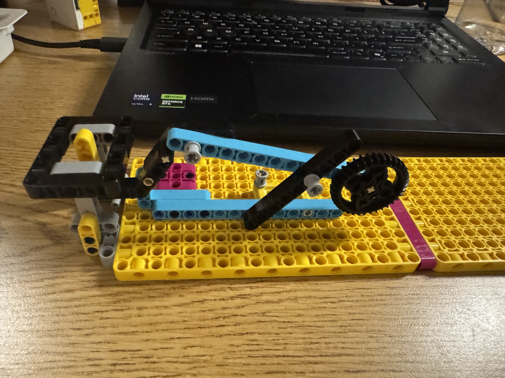

Project Portfolio
Project 9: Robotic Arm
This project gave us the layout of a base structure and two pickup and drop-off stations. We had to move a ping-pong ball from Point A to Point B. However, like most projects, I decided to be ambitious and take a more fun route than building a typical robotic arm. I decided to attempt to create a launching mechanism that would shoot the ping-pong ball and somehow send it to the endpoint.
I ran into many problems. First, the pickup point was supposed to include a sensor, and even though I removed it from my design, I still had very little room to fit a launching mechanism in such a small space. I had to get creative. Determining the angles at which I would connect the axles so that I could fit the launcher into the small space proved difficult. You can see my initial design in the photo below.

The idea was to add tension to the gear using rubber bands, then have a motor pull the gear back and release it to launch the ping-pong ball. After redesigning my entire launching mechanism to take up less space on the board, I ran into my biggest problem: using the motor to push the gear against its tension in order to launch the ball. I went all in on the idea that the motor could push the mechanism back, loading it with tension, and then use a coded release mechanism to release all that tension at once. Unfortunately, after experimenting with Dr. E's coding website for a while, I realized it could not do this. I found a similar function that could release the mechanism, but it did not release all the tension, so I could not get a strong enough launch.
In the end, this was a super fun project that I spent a lot of time on. If time had allowed, I could have found a different way to load the gear with tension and release it all at once. My friend suggested a good idea, but unfortunately I did not have enough time to implement it. If you are interested in how my launcher performed and want to see a couple of other projects from the class, check out the videos below.